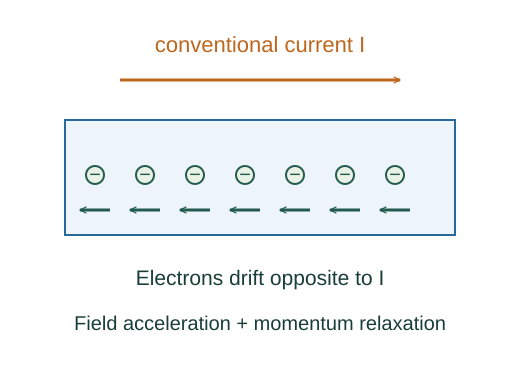

Derive conductivity in the Drude model
The Drude model balances acceleration by an electric field against randomizing collisions. Its average relaxation time determines a steady drift and therefore a conductivity.
What the symbols mean
n: conduction-electron density; e: positive elementary charge; τ: momentum relaxation time; m: carrier mass in the model.
When this applies
Classical relaxation-time model, weak steady electric field, uniform conductor, one carrier species, and a constant mean relaxation time.
Developing the argument

Write an average momentum balance
An electron accelerates opposite the electric field. Collisions relax its mean drift velocity toward zero at rate 1/τ.
Find the steady drift
After transients decay, the mean acceleration is zero. Solve for the drift velocity.
Convert drift to current density
The electron charge is negative, so current points along the field even though drift points opposite it.
A closer lookDerive the relation between drift and current ↗Identify conductivity and resistivity
Compare with local Ohm’s law 𝐉 = σ𝐄, then invert the coefficient. The model makes its physical dependence explicit.
A worked example
With n = 8.5 × 10²⁸ m⁻³, τ = 2.5 × 10⁻¹⁴ s and m = me, the model gives conductivity near 6.0 × 10⁷ S/m.
Derivation behind this calculation ↗A point to keep straight
This simple model does not capture quantum band structure or all temperature effects. Effective carrier masses and scattering mechanisms can matter.
Check the assumptions and derivation ↗